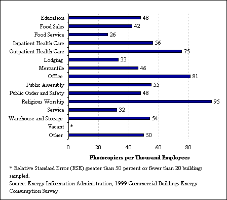

EIA Home > Commercial Home > Data Reports > Computers in Commercial Buildings
|
Table 1. Computers in Commercial Buildings
|
The Commercial Buildings Energy Consumption Survey, or CBECS, collects data on the number of computers and photocopiers in commercial buildings. As the use of computers, as well as the use of other office equipment, has increased over the last ten to fifteen years, the energy consumed by this equipment has risen as well. The Annual Energy Outlook 2002 forecasts that commercial energy demand will grow at an average annual rate of 1.7 percent, with the most rapid increases in demand projected for computers, office equipment, and telecommunications and other equipment www.eia.gov/oiaf/aeo/index.html (opens a new window) -- "Annual Energy Outlook 2002 with Projections to 2020." The 1999 CBECS collected data on the number of computers in commercial buildings, as well as the number of photocopiers excluding small desktop copiers.
Computers in 1999
Figure 1 (below) shows that slightly less than half of all computers were located in office buildings, and about one-fifth were located in education buildings. This distribution of computers has remained essentially unchanged since 1995, when 49 percent of computers were located in office buildings and 19 percent in education buildings. See Table 1 for detailed data on computers in 1999.
Figure 1. Distribution of Computers in Commercial Buildings, 1999
The greatest ratio of computers to square feet was in office buildings, with 2,295 computers per million square feet of space. Large office buildings (greater than 50,000 square feet) had 2,459 computers per million square feet and small office buildings (less than or equal to 50, 000 square feet ) had 2,061 computers per million square feet. Education and health care buildings had the next highest ratio of computers to square feet, with 1,377 computers per million square feet in education buildings and 1,252 computers per million square feet in health care buildings.
Figure 2. Ratio of Computers to Square Feet for Different Building Types
The report on computers in commercial buildings in 1995 (PCs and Computer Terminals in Commercial Buildings) speculated that one computer per person might be a natural saturation point in the market for computers. So far, that hypothesis still holds. Only one category, education buildings, has greater than one computer per employee, most likely because students make up a great number of the computer users in education buildings. In office buildings, the ratio in 1999 was about 9.5 computers to 10 employees, continuing the upward trend from approximately 8 computers to 10 employees in 1995.
Figure 3. Ratio of Computers to Employees for Different Building Types
Government-owned buildings of all types, had, on average, more than one computer per person (1,104 computers per thousand employees). They also had a fairly high ratio of computers to million square feet (1,257). Nongovernment-owned buildings (all types) had 652 computers per thousand employees and 770 computers per million square feet. A possible explanation for this is that education and office buildings were predominant types of government-owned buildings. Both these activities are very computer-intensive. Photocopiers in 1999
Almost half (48 percent) of all photocopiers were located in office buildings. The other half were distributed relatively evenly over the other buildings types. See Table 2 for detailed data on photocopiers in 1999. The building types with the greatest ratios of photocopiers to square feet were outpatient health care and office buildings, with 204 and 196 photocopiers per million square feet, respectively. Outpatient health care buildings tend to be smaller than other types, but most of them contain at least one photocopier, explaining the high ratio there.
Figure 4. Ratio of Photocopiers to Square Feet for Different Building Types
Buildings whose principal activity was religious worship had the highest ratio of photocopiers to employees, with 95 photocopiers per thousand employees. Office buildings came next, with 91 photocopiers per thousand employees. The religious worship figure may be high because these types of buildings generally have just a few employees but at least one photocopier for business.
This trend can be seen when considering all types of buildings categorized
by number of workers. Buildings with fewer than five workers had the
greatest number of photocopiers per thousand employees, and as the number
of workers increased the number of photocopiers per employee decreased.
Figure 5. Ratio of Photocopiers to Employees for Different Building Types
 Trends: Computers from 1992 to 1995 to 1999Since 1992, there has been a steady increase in both the total number of computers in commercial buildings and the ratio of computers to square feet and computers to employees. 1992 was the first year the Energy Information Administration began collecting information about computer equipment in CBECS. Growth slowed down for most building types between 1995 and 1999, compared to between 1992 and 1995. Office buildings have experienced slower growth rates than other building types, but the number of computers was initially higher in office buildings than in other buildings. Table 3 and Table 4 compare the number of computers, computers per square foot, and computers per employee in 1992, 1995, and 1999.
Figure 6. Percent Change in the Number of Computers, 1992 to 1999
In Figure 6 , Table 3 , and Table 4 , the category of "assembly" buildings is equivalent to the "public assembly" category used in the 1999 tables and figures. The category of "other" buildings includes vacant buildings, religious worship buildings, public order and safety buildings, and laboratories. This category experienced huge growth from 1995 to 1999 in computers per thousand employees and computers per million square feet. "Other" buildings had a 462 percent growth rate in computers per thousand employees, and a 364 percent growth rate in computers per million square feet (see Table 4). The 1999 CBECS did not specifically identify buildings or portions of buildings containing large numbers of computers or computer servers. In the 2003 CBECS there will be a separate building activity category for data centers, in addition to specific questions related to space in buildings devoted to computing, so that the characteristics and energy consumption of buildings with a high density of computers can be better understood.
Specific questions may be directed to:
Jay Olsen http://www.eia.gov/consumption/commercial/data/archive/cbecs/pc_copier/pccopier99.html
If you are having any technical problems with this site, please contact the EIA webmaster at wmaster@eia.doe.gov
|